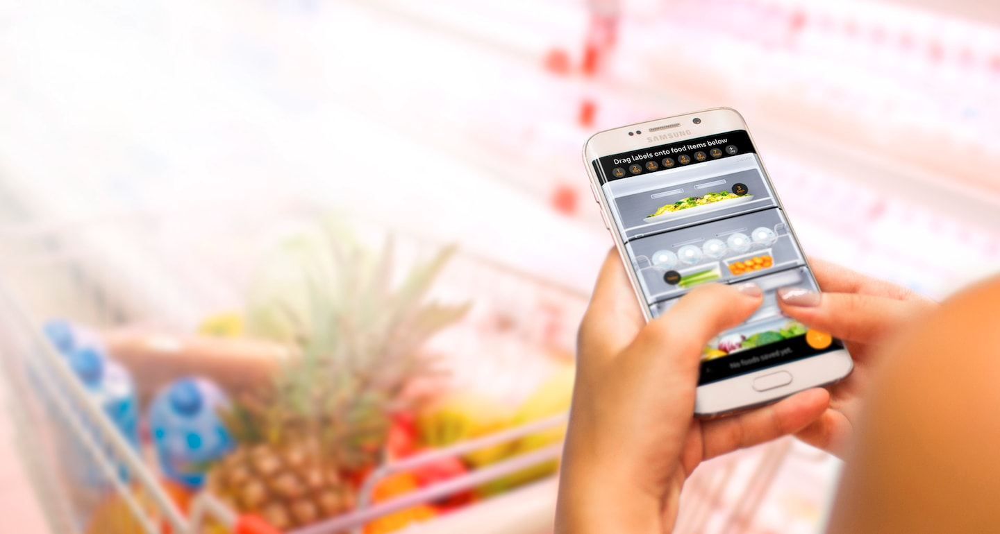
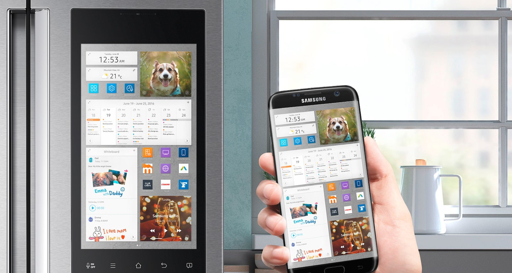

Family Hub
Food Cam & Food Reminder
Drei Kameras im Inneren des Kühlschranks zeigen Ihnen jederzeit und überall Ihre gekühlten Lebensmittel auf
Ihrem kompatiblen Mobilgerät an. Die Bilder der Kameras werden ganz einfach über die Smart Home App/Smart
Connect App auf Ihr Smartphone oder Tablet geschickt und zeigen den Inhalt der Regalböden an, so dass Sie selbst
beim Einkaufen oder von unterwegs einen raschen Blick in den Kühlschrank werfen können.

Phone & TV Mirroring
Streamen Sie Inhalte von Ihrem kompatiblen Fernseher oder von Ihrem kompatiblen Smartphone direkt auf den
Family Hub. Damit erscheinen Ihre Lieblingssendungen oder Urlaubsfotos auf dem 21,5 Zoll großen Touchscreen
direkt in Ihrer Küche und lassen sich komfortabel bedienen.
